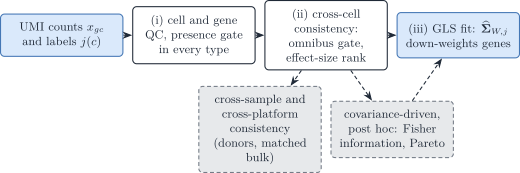
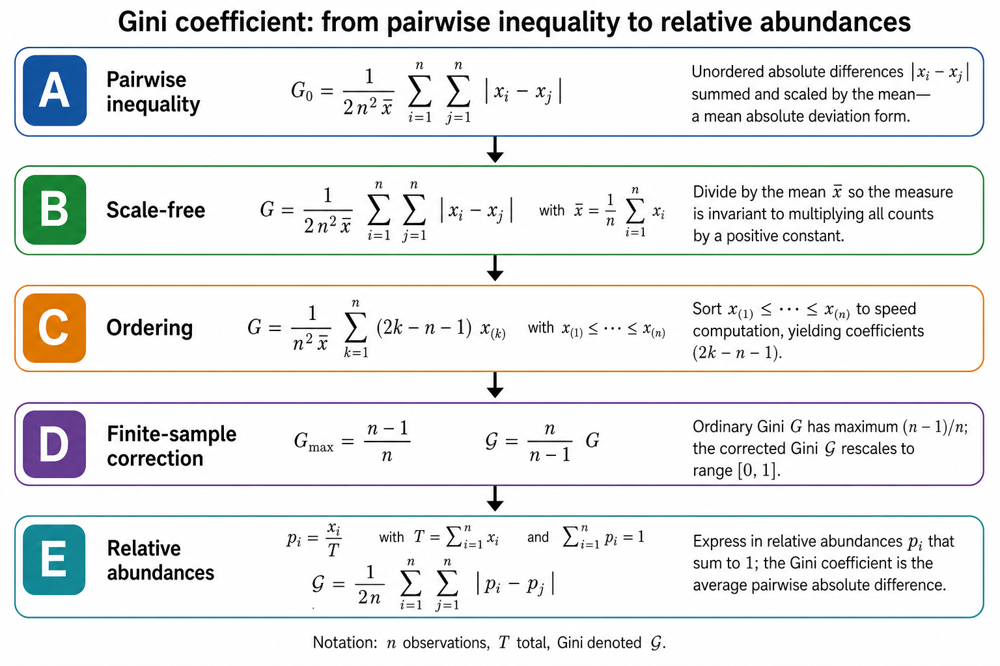
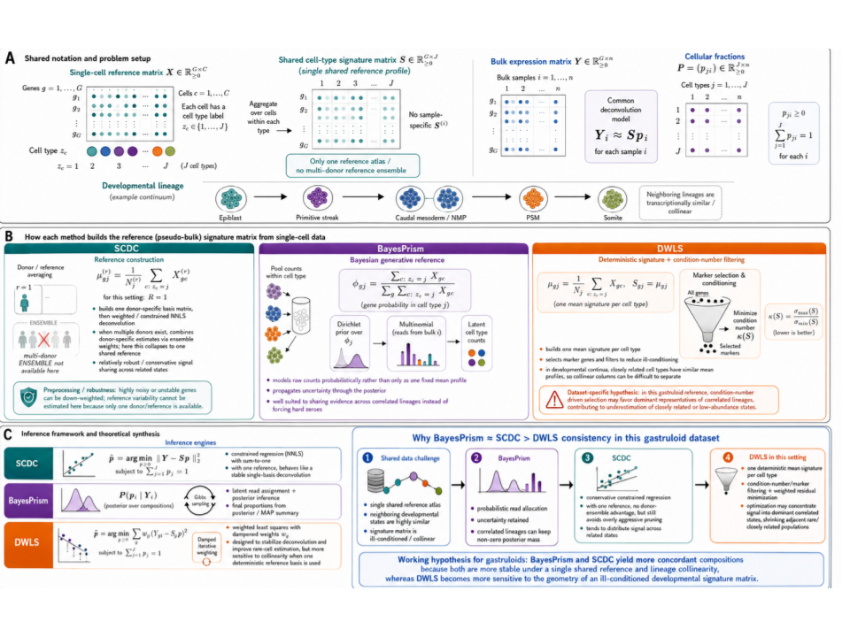
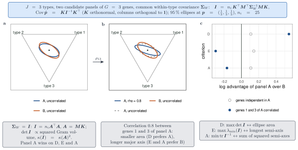
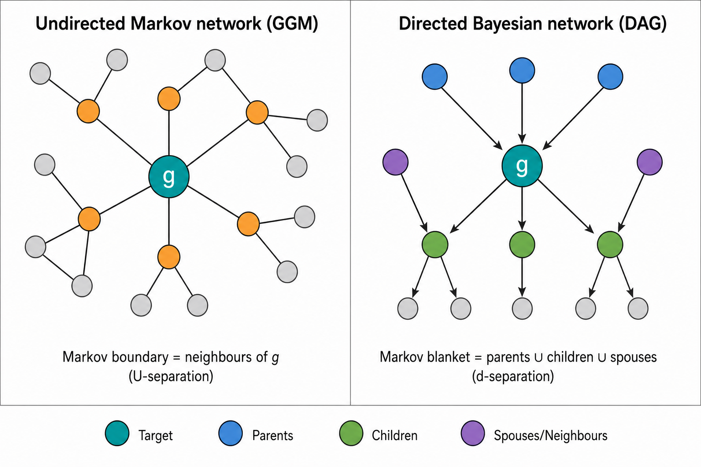

Notation (shared by all vignettes; aligned with the article)
Gene g=1,\ldots,G; cell type j=1,\ldots,J (a second type is \ell); bulk sample i=1,\ldots,N; reference donor (replicate) r=1,\ldots,R; cell c, with C_j reference cells of type j. The index i is dropped inside a derivation and restored in the model statements.
Symbol Meaning y_{gi}, \boldsymbol{y}_{\cdot i} Bulk expression on a linear scale m_{ji}, n_i=\sum_jm_{ji} Cells of type j in bulk sample i, and their total \tilde{\boldsymbol{y}}_{\cdot i}=\boldsymbol{y}_{\cdot i}/n_i Bulk expression per cell \boldsymbol{p}_{\cdot i}\in\Delta^{J-1} Cell fractions, p_{ji}=m_{ji}/n_i \boldsymbol{\rho}_{i}\in\mathbb{R}^{J-1} Isometric log-ratio (ILR) coordinates of \boldsymbol{p}_{\cdot i}, \boldsymbol{p}_{\cdot i}=\operatorname{softmax}(\mathbf{V}\boldsymbol{\rho}_i) with a Helmert basis \mathbf{V} \boldsymbol{q}_{\cdot i} Transcript fractions, q_{ji}=p_{ji}S_j/\sum_\ell p_{\ell i}S_\ell \boldsymbol{\mu}_{\cdot j}, \boldsymbol{\Sigma}_j Mean and G\times G gene–gene covariance of a type-j population profile \boldsymbol{\Omega}_j=\boldsymbol{\Sigma}_j^{-1} Precision matrix of type j \boldsymbol{\Gamma}_g J\times J covariance across cell types for gene g ( bMIND,EPIC-unmix,Unico)\boldsymbol{x}_{\cdot j,i} Purified profile of type j in sample i x_{gc}, \boldsymbol{x}_{\cdot c}, s_c Raw UMI count of gene g in reference cell c, and the size factor of cell c \boldsymbol{\lambda}_{\cdot c}, \boldsymbol{z}_{\cdot c} Size-free expression of cell c; its latent log-expression in the Poisson log-normal (PLN) model \tilde{\boldsymbol{\mu}}_{\cdot j}=C_j^{-1}\sum_{c\in j}\boldsymbol{x}_{\cdot c}=S_j\boldsymbol{\theta}_{\cdot j} Per-cell mean of the raw UMI counts of the C_j reference cells of type j \boldsymbol{\theta}_{\cdot j}, S_j=\mathbf{1}^{\top}\tilde{\boldsymbol{\mu}}_{\cdot j} Relative abundance (\mathbf{1}^{\top}\boldsymbol{\theta}_{\cdot j}=1) and mean transcriptome size of a type-j cell \boldsymbol{\Sigma}_{W,j}, \boldsymbol{\Sigma}_{B,j} Within-donor cell-to-cell covariance of type j (one single-cell sample); between-donor covariance of type j (needs R\ge2 donors) \boldsymbol{S}_W(\boldsymbol{v})=\sum_jv_j\boldsymbol{\Sigma}_{W,j}, \boldsymbol{S}_B(\boldsymbol{v})=\sum_jv_j^2\boldsymbol{\Sigma}_{B,j} Linear and quadratic covariance mixtures with weights \boldsymbol{v} \boldsymbol{V}_j Empirical covariance of type j, computed from its reference profiles or cells \boldsymbol{R}_j Empirical correlation matrix of type j (bold; the scalar R is the number of donors) \boldsymbol{\Delta}_j=\operatorname{diag}(\boldsymbol{V}_j) Diagonal matrix of the empirical variances of type j \lambda Penalty of a regularised covariance or precision estimator \psi_g, \mathcal{D}_g Negative binomial dispersion of gene g; deviance of gene g in a count model \delta_{gj} Detection rate of gene g in type j (fraction of cells with a non-zero count) \varpi_{\ell\mid j}, \varpi_{j\ell}, \bar\varpi MixSim overlap: probability of misclassifying a draw of j into \ell, pairwise overlap \varpi_{j\ell}=\varpi_{\ell\mid j}+\varpi_{j\mid\ell}, and its average over pairs ( BarOmega)\boldsymbol{T}_{ji}=\sum_{c=1}^{m_{ji}}\boldsymbol{X}_{jic} Total expression contributed by type j to sample i a_i Sample-wide scale between the reference and the bulk library c_i=a_in_i, \phi_i=a_i^2n_i Mean scale and variance scale of the single-cell model b_g, \tilde b_g=b_g^{\mathrm{bulk}}/b_g^{\mathrm{ref}} Capture efficiency of gene g in one protocol, and the gene-wise platform ratio; \tilde{\boldsymbol{B}}=\operatorname{diag}(\tilde{\boldsymbol{b}}) \boldsymbol{D}_i Diagonal, heteroscedastic bulk measurement noise A tilde marks a quantity rescaled to a reference unit: per cell (\tilde{\boldsymbol{y}}, \tilde{\boldsymbol{\mu}}) or relative to the reference protocol (\tilde{\boldsymbol{b}}). \boldsymbol{\Sigma}_j couples genes within one cell type; \boldsymbol{\Gamma}_g couples cell types within one gene. A symbol absent from this table is defined in the vignette that uses it, with one meaning there.
Scope
This chapter states which genes should enter a DeCovarT reference built from single-cell data, and why. It holds the theory: what the genes are for, the selection strategies of the literature, three tiers of selection, and the statistical tests behind them (Gaspard-Boulinc et al. 2025; Avila Cobos et al. 2018). The reference considered here is a single-cell experiment on one specimen, so only cross-cell consistency can be assessed (Section 3); cross-sample consistency and covariance-driven selection are perspectives (Section 6). The application to a real reference (filters as applied, settings, rank tables, code) is in the feature-selection chapter of the reproducibility book. Strategies compared on simulated references are in Appendix S6. Marker-based abundance scores (enrichment modules) are out of scope (Aran et al. 2017).
Local symbols. C=\sum_jC_j is the number of reference cells in one time slot; j(c) is the label of cell c. \delta_{gj}=C_j^{-1}\sum_{c:j(c)=j}\mathbb{1}(x_{gc}>0) is the detection rate of gene g in type j, and v_{gj} is the g-th diagonal entry of \boldsymbol{V}_j. In a negative-binomial (NB) model \psi_g is the dispersion, so that \operatorname{Var}(x_{gc})=m_{gc}+m_{gc}^2/\psi_g with m_{gc}=\operatorname{E}(x_{gc}); \mathcal{D}_g(M) is the deviance of model M for gene g; r_{gc} is a Pearson residual. A gene panel is written \mathcal{G}\subseteq\{1,\ldots,G\}.

Figure 1: “Three tiers of gene selection for a DeCovarT reference from one specimen. Tiers (i) and (ii) remove genes; tier (iii) keeps the remaining genes and lets the fitted covariance down-weight them. Dashed boxes are perspectives: cross-sample consistency needs several specimens or a matched bulk, and covariance-driven selection needs the estimated within-type covariances.”
Warning 1: What the genes are for
The target is a set of genes that makes the reference moments (\boldsymbol{\mu}_{\cdot j},\boldsymbol{\Sigma}_{W,j}) estimable and informative about \boldsymbol{p}. This is not population-level differential expression, for two reasons.
- One specimen. The reference is one technical scRNA-seq experiment. Its cells are draws from one specimen, not biological replicates, so every p-value below calibrates a screen inside that specimen. Treating cells as replicates of a population contrast inflates the false discoveries (Zimmerman et al. 2021; Squair et al. 2021; Crowell et al. 2020). Only the within-donor covariance \boldsymbol{\Sigma}_{W,j} is estimable; the between-donor part needs R\ge2 donors (2.1).
- Labels are given. A test of the type effect is valid only if the labels were fixed before the statistic is computed. Labels obtained by clustering the same matrix make the test anti-conservative (post-clustering inference, González-Delgado et al. 2025) .
Selection proceeds in three tiers (Figure 1): (i) quality control and a presence gate; (ii) cross-cell consistency, an omnibus test used as a gate and an effect-size rank; (iii) down-weighting by the model instead of removal. Tiers (i) and (ii) are filters; tier (iii) is part of the likelihood. Feature selection as a pre-modelling filter has the usual caveats (Guyon and Elisseeff 2003): it is a proposal, to be checked by out-of-sample deconvolution error (S6).
1 Gene-selection strategies in the literature
Deconvolution methods choose genes in three ways: univariate one-versus-others screens, searches over the whole signature, or no selection at all, with gene weights doing the work. This section reviews them, states where they depart from the count model used here, and compares second-generation methods in Table 1. Each method’s likelihood is reviewed in 5.1.
1.1 Univariate screens, one versus others
Classical signature pipelines score gene g for type j against the remaining types, then concatenate the per-type shortlists (Abbas et al. 2009; Newman et al. 2015; Finotello et al. 2019).
-
Differential expression and fold-change ranks.
limma–voom,edgeRandDESeq2are the usual tools for one-versus-rest contrasts (Ritchie et al. 2015; Robinson et al. 2010; Love et al. 2014). CIBERSORT keeps genes with adjusted p\le0.3, orders them by fold change and prunes the panel by its condition number (Newman et al. 2015); Abbas et al. keep genes whose expression in the target type exceeds that of the second- and third-ranked types, then choose the panel with the smallest condition number (Abbas et al. 2009). On cells of one specimen these tests treat cells as replicates (Warning 1); their pseudo-bulk versions need donors (Section 6.1). - ANOVA F test. Wang et al. rank genes by the F statistic of a type factor against an intercept-only model (Wang et al. 2010). Its count-model version, with its calibration, is the omnibus test of tier (ii) (Section 3.2).
1.1.1 Specificity scores
Long one-versus-rest lists are often compacted with the entropy or the Gini coefficient of the type shares u_{gj}=\mu_{gj}/\sum_{\ell}\mu_{g\ell}, as in BioQC (Zhang et al. 2017):
H_g=-\sum_{j=1}^{J}u_{gj}\log u_{gj}, \qquad \mathrm{Gini}_g = \frac{1}{2J}\sum_{j=1}^{J}\sum_{\ell=1}^{J}\lvert u_{gj}-u_{g\ell}\rvert = \frac1J\sum_{k=1}^{J}(2k-J-1)\,u_{g(k)}, \tag{1}
with 0\log0=0 and u_{g(1)}\le\cdots\le u_{g(J)}. H_g/\log J and J\,\mathrm{Gini}_g/(J-1) lie in [0,1]; low entropy and high Gini mean that few types carry the mass. Both scores reward exclusive expression, which the presence gate (Section 2.1) excludes, and neither sees redundancy between genes.

Concatenation does not control that redundancy. Two specific markers of different types can still be nearly collinear rows of \boldsymbol{\mu} when the types share a programme (a lineage, an activation axis), so the union of per-type lists inflates |\mathcal{G}| while \kappa_2(\boldsymbol{\mu}_{\mathcal{G}}) stays large and NNLS or GLS fits stay unstable (Newman et al. 2015; Avila Cobos et al. 2018). A criterion on the whole signature is then needed.
1.2 Searches over the whole signature
-
Condition number. CIBERSORT and DWLS keep the candidate signature with the smallest \kappa_2(\boldsymbol{\mu}_{\mathcal{G}}) (Newman et al. 2015; Tsoucas et al. 2019, 7; Gong and Szustakowski 2013); its limits are in
-
Multi-objective genetic search.
AutoGeneSsearches gene subsets with a genetic algorithm that minimises the correlation between type centroids and maximises their distance (Aliee and Theis 2021); MOGAMUN applies the same kind of search to network modules (Novoa-del-Toro et al. 2021). The loss is defined on the full J-column signature, not on one-versus-rest lists.
Both criteria see the means only. Criteria that also use the within-type covariance need \widehat{\boldsymbol{\Sigma}}_{W,j}, so they come after the omnibus gate (Section 6.2).
1.3 Critiques of current marker rules
The reviewed marker rules (Table 1) depart from the count model of tier (ii) in five ways.
-
Hurdle models on droplet counts. DWLS defines markers with the
MASThurdle model (Tsoucas et al. 2019, 7). Droplet UMI counts show no zero inflation beyond what the NB predicts (Svensson 2020) , and current data do not support zero-inflated measurement models (Sarkar and Stephens 2021, 5). The hurdle splits one count into a detection and a magnitude test (Finak et al. 2015) where one NB test of Equation 6 suffices. - Gaussian t-tests on counts. ReDeconv uses a two-sample t-test between cells (Lu et al. 2025, 14); deMixSC uses a paired t-test of bulk against matched pseudo-bulk (Guo et al. 2023, 12).
-
Cells as independent replicates. Every test above that runs on cells (DWLS, ReDeconv, BayesPrism’s marker option) treats them as replicates of a population contrast (Warning 1). Pseudo-bulk
DESeq2,edgeRorlimma–voom avoid this only with biological replicates at the level of the contrast (Section 6.1). - No multiplicity control. ReDeconv keeps genes with p<0.05 in each comparison against every other type, with no FDR correction (Lu et al. 2025, 14).
-
Graph-based screens before the graph is estimated. Differential-network screens (
INDEED, D-trace) and Markov-boundary growth of marker seeds need fitted graphs; here they are post hoc (Section 6.2.7).
1.4 Comparison of second-generation methods
Table 1 summarises, method by method, the facts found in the papers, in the order of the tiers. Page numbers refer to the PDF pages of the local extractions (“supp.” marks a supplement). A dash means that the item was not found in the extracted text; it does not mean that the method has no such step. The same table, with the same facts, is Appendix C of the CardamomOT comparison note.
| Method | Cell QC (tier i) | Gene filter (tier i) | Marker rule (tier ii) | Weighting (tier iii) | Cross-platform (perspective) |
|---|---|---|---|---|---|
| RNA-Sieve (Erdmann-Pham et al. 2021) | optional: library size or pairwise distance ≥ 3 MAD from the type median (supp. p. 3) | non-zero in ≥ 20 % of the cells of ≥ 1 type (supp. p. 3) | none | Gaussian composite likelihood from the CLT (Eq. 10, p. 10) | range bound and MAD outliers on four statistics (Eqs 12–13, p. 11) |
| DECALS (Cai et al. 2024) | — | CIBERSORTx S-mode candidate genes (p. 13) | ∩ markers of Mathys et al. (2019) (Fisher’s exact test, FDR): 159 genes (p. 13; supp. pp. 18–19) | constrained OLS; GLS biased in practice (pp. 6, 9) | S-mode batch correction (p. 13) |
| MEAD (Xie et al. 2026) | — | — | none; removing genes gains nothing unless noise differs (p. 17) | WLS from the reference variance (pp. 17–18); sandwich (p. 13) | gene-wise ratios with mean 1 (pp. 5, 8) |
| ReDeconv (Lu et al. 2025) | — | — | t-test p<0.05 against every other type, no FDR; fold change ≥ 2; smallest SD/mean, about 100 per type (p. 14) | Gaussian, composition-dependent variance (Eq. 5, p. 14) | length normalisation of the bulk only (p. 2) |
| MuSiC (Wang et al. 2019) | — | all shared genes (p. 7) | none; small within-cluster variance in the tree-guided stage (pp. 3, 8) | W-NNLS, weights from cross-subject variance (Eq. 10, p. 7) | optional gene- and subject-specific intercept (p. 7) |
| deMixSC (Guo et al. 2023) | < 500 UMI, < 200 genes, > 50 % mitochondrial (p. 11) | detected in < 5 % of cells removed (p. 11) | none | W-NNLS, iterated weights (p. 12) | paired t-test bulk vs pseudo-bulk, BH; 5,000 genes down-weighted by a=1000 (p. 12) |
| BayesPrism (Chu et al. 2022) | types with < 20 cells excluded in one benchmark (supp. p. 15) | ribosomal, mitochondrial, X and Y genes (supp. pp. 14, 19) | optional scran markers, t-tests, up-regulated only (supp. pp. 14–15) | Bayesian multinomial (supp. pp. 3–6) | bulk-specific profiles; log-normal fold-change prior (supp. pp. 5–6) |
| DWLS (Tsoucas et al. 2019) | — | — |
MAST hurdle, FDR < 0.01, \log_2FC > 0.5; 50–200 per type; smallest \kappa (p. 7) |
dampened WLS (pp. 2, 7) | none |
| SCDC (Dong et al. 2021) | cells with a questionable type or low quality removed (p. 9) | genes with zero counts in every sample (p. 9) | none | W-NNLS, maximal-variance weights clipped at the 15th/85th percentiles (p. 10) | ENSEMBLE over references (p. 3) |
| RCTD (Cable et al. 2022) | spots ≥ 100 UMI (p. 9) | mean above 0.0625 counts per 500 (p. 7) | log-fold change ≥ 0.5 against the other types, no test (p. 7) | Poisson–lognormal GLMM (p. 6) | gene-wise platform random effect (pp. 3, 6) |
| CardamomOT 2.0.0 (Maugé & Ventre 2026) | paper: —; code: per-cell depth factor, no cell removed | paper: gene sets of earlier studies (p. 32); code: no mitochondrial, ribosomal or non-coding genes | code: W_1 and entropy terminals, round robin of per-type Wilcoxon tests, NB separability, Steiner closure | NB-mixture likelihood, \ell_1 towards a prior network (Eq. 10, p. 9) | not applicable (no bulk) |
| DeCovarT (this chapter) | authors’ QC; MAD rules optional | presence gate in every type (Equation 2) | omnibus NB / QL F test as an FDR gate, effect-size rank | GLS with \widehat{\boldsymbol{\Sigma}}_{W,j} | none: one reference specimen (Section 6.1.1) |
DeCovarT builds on these methods in three ways.
- Covariance in the criterion. Only DeCovarT puts gene–gene covariance into the criterion that estimates \boldsymbol{p}; DECALS and MEAD use it only for the variance of their estimators. The other methods treat genes as independent, the setting in which a univariate screen is also the objective (Section 6.2.1). DeCovarT keeps the univariate screen as a gate (tier ii) and leaves the weighting to the covariance (tier iii).
- One count test per gene. The tests that select genes run on cells, mostly with Gaussian or hurdle models, and only DWLS (markers) and deMixSC (platform discrepancy) report a multiplicity correction. DeCovarT uses one NB omnibus test per gene, a Benjamini–Hochberg gate and a permutation calibration (Section 3.2).
- No perfect markers. MuSiC and MEAD argue against marker pre-selection when the genes are weighted, and MEAD shows that perfect markers break identifiability under gene-wise platform ratios (Section 6.1.1); DWLS and DECALS still build marker-only signatures. DeCovarT removes perfect markers with the presence gate and weights the remaining genes.
2 Tier (i): quality control
QC removes cells and genes that lie outside the support of any expression model. The thresholds below are examples from the reviewed methods (Table 1), not defaults of DeCovarT.
- Cells. Library size more than 3 median absolute deviations (MAD) from the median of its type, and cells more than 3 MAD from the median pairwise distance within their type (RNA-Sieve, optional; Erdmann-Pham et al. (2021), supplement p. 3). Fewer than 500 UMIs, fewer than 200 detected genes, or more than 50 % mitochondrial UMIs (deMixSC; Guo et al. (2023), p. 11).
- Genes. Ribosomal, mitochondrial and sex-chromosome genes, which reflect cell survival and donor sex rather than type (BayesPrism; Chu et al. (2022), supplement pp. 14, 19). Genes detected in fewer than 20 % of the cells of every type (RNA-Sieve, supplement p. 3).
2.1 Presence gate in every type
Necessary, not sufficient
A gene enters tier (ii) only if
\min_{j}\delta_{gj}\ge\delta_{\min} \quad\text{and}\quad \min_{j}v_{gj}>0, \tag{2}
with \delta_{\min} a few per cent (for example 0.05), fixed before the ranks are seen. These are necessary conditions for a non-singular within-type covariance and for an identifiable \boldsymbol{p}; they are not sufficient. Two cases show what the gate excludes.
- Zero in every cell of type j. Then v_{gj}=0 and the whole row and column g of \boldsymbol{V}_j are zero: \boldsymbol{V}_j is singular (\det\boldsymbol{V}_j=0), the correlation v_{gh}/\sqrt{v_{gg}v_{hh}} is 0/0 and so undefined, and the fitted type-j Gaussian is degenerate, a point mass in coordinate g. Its likelihood is unbounded, so no maximum-likelihood estimate exists.
- Detected in a single cell c. With count a in that cell, the centred counts of g are a(\boldsymbol{e}_c-\mathbf{1}/C_j), and its correlation with any gene h is r_{gh}=\tilde h_c/(\sqrt{1-1/C_j}\,\lVert\tilde{\boldsymbol h}\rVert), \tilde{\boldsymbol h} the centred counts of h: one cell sets it. Two genes detected only in cell c have r=1 whatever their counts, a perfect and degenerate correlation, and \boldsymbol{V}_j is again singular.
With \delta_{\min}C_j\ge2 the gate keeps only genes with at least two non-zero cells in every type, which excludes both cases. It does not make \boldsymbol{V}_j invertible: \operatorname{rank}\boldsymbol{V}_j\le \min(C_j-1,G), so \boldsymbol{V}_j is singular whenever G\ge C_j or genes satisfy an exact linear relation, and shrinkage is still needed (3.2). Nor does it make \boldsymbol{p} identifiable, which requires a non-singular Fisher information for \boldsymbol{p} (1.2). The gate also removes perfect markers, whose effect under gene-wise platform ratios is in Section 6.1.1.
3 Tier (ii): cross-cell consistency
MuSiC introduced “marker gene consistency” with two parts (Wang et al. 2019, 2). Cross-cell consistency asks whether a gene is stable across the cells of one type, so that biased cell capture does not drive its selection; cross-cell consistent genes have a low within-cluster variance (Wang et al. 2019, 3). Cross-sample consistency asks whether a gene’s type mean is stable across specimens (MuSiC’s cross-subject consistency), and needs at least two of them. With a reference from one specimen only cross-cell consistency can be assessed; cross-sample consistency is a perspective (Section 6.1). The natural statistic for cross-cell consistency is the split of a gene’s variation into between-type and within-type parts.
3.1 Pearson residuals and the between/within split
The technical null fits each gene with library size as the only covariate,
M_{0}:\; \log m_{gc}=\beta_{0g}+\log s_{c}, \qquad x_{gc}\sim\mathrm{NB}(m_{gc},\psi_{g}), \tag{3}
which is the model of SCTransform with vst.flavor = "v2", where the depth slope is fixed and library size is an offset (Hafemeister and Satija 2019; Lause et al. 2021). Cell type is deliberately absent: putting j in the null would remove the signal to be ranked. The Pearson residuals r_{gc}=(x_{gc}-\hat m_{gc})/\sqrt{\hat m_{gc}+\hat m_{gc}^{2}/\hat\psi_{g}} split as
\mathrm{SS}_{\mathrm{B},g} = \sum_{j=1}^{J}C_{j}\bigl(\bar r_{gj}-\bar r_{g}\bigr)^{2}, \qquad \mathrm{SS}_{\mathrm{W},g} = \sum_{j=1}^{J}\sum_{c:j(c)=j}\bigl(r_{gc}-\bar r_{gj}\bigr)^{2}, \tag{4}
with \bar r_{gj} the mean residual in type j and \bar r_{g} the overall mean (\approx0). A lineage marker has a large between-type and a small within-type part; a stress-response gene can have a large total residual variance and still a small between-type part. Figure 3 shows the four steps on simulated counts.
![Four scatter panels joined by arrows and labelled with formulas. Panel a: gene variance against gene mean on log scales, points above the Poisson line and close to the negative-binomial curve. Panel b: counts of one gene against the size factor for two cell types, with the fitted mean rising in proportion to the size factor. Panel c: per-gene dispersion estimates against the mean, scattered around an increasing smooth curve. Panel d: Pearson residuals of the same gene against the size factor, centred on zero with no depth trend, the two cell types at different levels.](figures/fig_03_1_sctransform.svg)
SCTransform (v2) workflow on simulated counts (2,000 genes, 2,000 cells of two types, seed 20261101). (a) Gene variance against gene mean: NB variance with the smoothed dispersion (solid) and the Poisson line (dashed). (b) Counts of one marker gene against the size factor, with the fitted mean of M_0 (library size as offset, no cell type). (c) Per-gene dispersion estimates against the gene mean, and their smooth across genes, the empirical-Bayes regularisation. (d) Pearson residuals of the same gene: no trend with depth, the type difference kept. Code: scripts/figures/fig_03_1_sctransform.R.
The sums in Equation 4 weight every cell equally, so the most abundant type dominates them. The equal-type version gives each type weight 1/J:
\mathrm{MS}^{\mathrm{eq}}_{\mathrm{B},g} = \frac1J\sum_{j=1}^{J}\Bigl(\bar r_{gj}-\frac1J\sum_{\ell=1}^{J}\bar r_{g\ell}\Bigr)^{2}, \qquad \mathrm{MS}^{\mathrm{eq}}_{\mathrm{W},g} = \frac1J\sum_{j=1}^{J}\operatorname{var}_{c:j(c)=j}(r_{gc}). \tag{5}
3.2 Omnibus test: deviance and quasi-likelihood F
Add the type main effect to Equation 3:
M_{1}:\; \log m_{gc}=\beta_{0g}+\beta_{g,j(c)}+\log s_{c}, \qquad \beta_{g1}=0, \qquad H_{0g}:\beta_{g2}=\cdots=\beta_{gJ}=0 . \tag{6}
The joint null has J-1 degrees of freedom (Agresti 2015). One omnibus test per gene replaces \binom{J}{2} pairwise or J one-versus-rest tests, and a single Benjamini–Hochberg correction across genes follows.
- Likelihood ratio (analysis of deviance). \Lambda_g=\mathcal{D}_g(M_0)-\mathcal{D}_g(M_1), referred to \chi^2_{J-1} when \psi_g is known. It needs one M_1 fit per gene, a one-way GLM with J coefficients.
- Wald. It needs M_1 only and fails near the boundary: with an all-zero type the NB estimate \hat\beta_{gj}\to-\infty, its standard error grows faster, and the statistic shrinks as the effect grows (Hauck–Donner effect) (Yee 2022). The presence gate removes that case.
The score (Rao) test needs only the M_0 fit that SCTransform already computes. Up to the variation of the IRLS weights within a type, its statistic for the type effect is the between-type sum of squares of the Pearson residuals,
T_g\approx\sum_{j=1}^{J}C_j\,\bar r_{gj}^{2}\approx\mathrm{SS}_{\mathrm{B},g}, \tag{7}
exactly Pearson’s \chi^2 on the type totals under a Poisson null. This identity is what makes the ratio below a test computed from SCTransform output without refitting. As a separate test the score adds nothing here: the boundary case, where it and the likelihood ratio stay finite while the Wald test fails, is removed by the presence gate, and the M_1 fit it saves is a small one-way GLM.
Quasi-likelihood F. Dividing T_g/(J-1) by the within-type Pearson dispersion \hat\phi_g=\mathrm{SS}_{\mathrm{W},g}/(C-J) gives
F_{g} = \frac{\mathrm{SS}_{\mathrm{B},g}/(J-1)}{\mathrm{SS}_{\mathrm{W},g}/(C-J)}, \tag{8}
the one-way ANOVA ratio (Wang et al. 2010). In GLM terms it is a quasi-likelihood F test: the mean model Equation 6 and the variance function V(m)=m+m^2/\psi_g are kept, and a scalar \phi_g absorbs a variance larger or smaller than V predicts. The reference F_{J-1,C-J} accounts for estimating \phi_g, as in the edgeR quasi-likelihood pipeline and in glmGamPoi::test_de(), which use the deviance in the numerator (Lund et al. 2012; Ahlmann-Eltze and Huber 2020). Three consequences follow.
- Keep overdispersed genes. Within-type overdispersion is the within-type scatter that the denominator already penalises, and the covariance that DeCovarT models. Removing such genes before the test removes that signal.
- A scalar \phi_g cannot absorb a wrong variance function. Under a Poisson null it cannot absorb the quadratic NB term, whose share grows with the type mean; the pooled \hat\phi_g is then wrong for every type. Use the NB variance, so that \phi_g\approx1 in every type; if between-type heteroscedasticity remains, use a Welch-type statistic or the equal-type mean squares of Equation 5.
- Gate, then rank by effect size. J and C are shared by all genes of a slot, so F_g is a monotone function of \mathrm{SS}_{\mathrm{B},g}/\mathrm{SS}_{\mathrm{W},g}; the analytic F adds a threshold, not a new ranking. Genes that pass the FDR gate are ranked by that ratio, or by its equal-type version, not by p-value.
When the NB variance function itself fails, quasi-likelihood with an empirical variance function is the fallback (Agresti 2015). When the shape differs between types (types that share a mean but differ in dispersion), a location–scale model with type-specific \psi_{gj} tests both, on 2(J-1) degrees of freedom; this is the GAMLSS margin used by scDesign3 (Song et al. 2024), Stasinopoulos & Rigby (2007) .
3.2.1 Calibration: permutation, Freedman–Lane, bootstrap
The nominal F_{J-1,C-J} tail is optimistic on SCTransform output for three reasons: residuals are clipped at \pm\sqrt{C/30}, \psi_g is regularised across genes and so is misspecified for any one gene, and residuals at low means are discrete and skewed (Hafemeister and Satija 2019; Lause et al. 2021). A permutation null keeps F_g and replaces its reference distribution.
- Permute labels, not genes. One permutation of the cell labels is applied to all genes at once. Each gene keeps its marginal distribution and its dependence on the other genes; only the link with the label is broken. Shuffling genes, or shuffling within cells, does not produce that null.
- Nuisance covariates. With covariates (batch, cell line, cell cycle), a global label shuffle creates impossible combinations. The Freedman–Lane scheme fits the reduced model without type, permutes its residuals with one row permutation shared by all genes, adds them back to the reduced fit, refits the full model and recomputes F_g (Freedman and Lane 1983).
3.3 Leverage is not influence
Residual size, leverage and influence are three different quantities (Agresti 2015). In a gene-wise GLM, leverage belongs to the observations (cells, or pseudo-bulk samples), not to the gene. For the one-way design of Equation 6 the hat value of cell c is h_{gc}=w_{gc}/\sum_{c':j(c')=j(c)}w_{gc'}, with IRLS weight w_{gc}=\hat m_{gc}^2/V(\hat m_{gc}): every cell of a rare type, and every cell with a large fitted mean, has high leverage. Influence combines the two; Cook’s distance is
\mathrm{Cook}_{gc} = \frac{r_{gc}^{2}\,h_{gc}}{J\,\hat\phi_g\,(1-h_{gc})^{2}} .
A high-expression marker in a small type sits at an extreme fitted mean and has high leverage, yet it agrees with the type effect: it is informative, not an outlier. Rules that clip by size alone, such as residual clipping or SCDC’s clipping of variance weights at the 15th and 85th percentiles (Dong et al. 2021, 10), shrink these observations with the harmful ones. An observation is a candidate outlier only when both its leverage and its standardised residual are large.
4 Tier (iii): down-weighting by the model
Filters remove genes; a weighted likelihood keeps them and lets their variance decide their influence. The reviewed methods sit on a ladder of noise models (Table 2; full ladder in 5.1).
| Rung | Variance of the bulk residual | Methods (anchors) |
|---|---|---|
| Weighted least squares | diagonal, gene-wise weights | MuSiC: bulk noise plus cross-subject variance, Eq. 10, p. 7; DWLS: fitted values, capped by a dampening constant, pp. 2, 7; SCDC: maximal-variance weights, clipped, pp. 5, 10; deMixSC: \hat y^2 plus squared residual plus a constant, p. 12; MEAD: reference variance with empirical-Bayes shrinkage, pp. 17–18 |
| Generalised least squares | full gene–gene covariance, depends on \boldsymbol{p} | DeCovarT: \sum_jp_j^2\boldsymbol{\Sigma}_j (population) or \sum_jp_j\boldsymbol{\Sigma}_{W,j} (single cell); DECALS: \sum_k\pi_{ik}^2\boldsymbol{\Sigma}_k for inference, pp. 7, 9 |
| Feasible GLS | covariance estimated, then iterated with \hat{\boldsymbol{p}} | DECALS Algorithm 1, p. 9; DeCovarT plug-in \widehat{\boldsymbol{\Sigma}}_{W,j} |
| Sandwich / GEE | working covariance, robust variance | MEAD: sandwich over a dependence set, pp. 13, 18 |
Two observations follow.
- DECALS computes its point estimate by constrained ordinary least squares and uses the covariance only for inference, because a GLS fit with an estimated covariance per sample was biased in their experiments (Cai et al. 2024, 6). The same risk applies to any feasible GLS whose covariance is estimated on few cells; shrinkage of \widehat{\boldsymbol{\Sigma}}_{W,j} addresses it (3.2).
- MEAD notes that removing genes brings no efficiency gain unless their noise levels differ (Xie et al. 2026, 17). Once the covariance is in the model, hard filtering is needed only for genes outside the model’s support: the presence gate (Section 2.1) and, when a matched bulk exists, cross-platform outliers (Section 6.1.1).
5 Selection effect on the covariance
Selecting genes changes the covariance that is then estimated on them.
- Small within-type variance by construction. A ratio such as Equation 8 rewards a small within-type part. ReDeconv goes further and keeps the genes with the smallest coefficient of variation (Lu et al. 2025, 14); MuSiC’s tree-guided stage keeps genes with small intra-cluster variance (Wang et al. 2019, 8). A panel chosen this way removes much of the within-type covariance that DeCovarT models, and the estimated \boldsymbol{\Sigma}_{W,j} on that panel is close to diagonal for that reason, not because genes are conditionally independent (3.2).
-
Weak marginal effects hide interactions. Genes with weak marginal effects are dropped by every univariate screen, and gene pairs whose signal lies in their covariance, not in their means, are then never examined. Covariance-aware criteria (Section 6.2.5,
- can recover them only from a shortlist that still contains them.
A practical check is to compare the distribution of v_{gj}, and of the off-diagonal entries of \boldsymbol{V}_j, between the selected panel and the genes that pass the presence gate.
6 Perspectives
6.1 Cross-sample consistency
Cross-sample consistency compares a gene across specimens: subjects or donors of the reference, or the reference and the bulk. It needs at least two specimens, or a reference and a matched bulk, so a one-specimen reference cannot assess it.
- Cross-subject variance (MuSiC). MuSiC’s cross-subject consistency guards against the choice of subjects (Wang et al. 2019, 2). Its weights down-weight genes with a large cross-subject variance (Eq. 10, p. 7), and an optional gene- and subject-specific intercept absorbs subject effects (p. 7). With R\ge2 donors this variance is the between-donor covariance \boldsymbol{\Sigma}_{B,j} of 2.1.
-
Pseudo-bulk differential expression.
DESeq2,edgeRorlimma–voom on donor-level pseudo-bulks test a population contrast with donors as replicates (Love et al. 2014; Crowell et al. 2020). Appendix S6 uses them only for multi-donor references (S6).
6.1.1 Cross-platform consistency
A gene can be a perfect cross-cell marker and still be measured differently by the reference and the bulk protocol. Cross-platform consistency is cross-sample consistency between the reference and the bulk, and needs a bulk that matches the reference. The reviewed methods handle it in four ways.
-
Range bound (RNA-Sieve). Per cell, the bulk is a convex combination of the type means, so on a common scale
\min_{j}\tilde\mu_{gj}\;\le\;\tilde y_{g}\;\le\;\max_{j}\tilde\mu_{gj} \tag{9}
up to sampling error. RNA-Sieve removes genes whose bulk value falls outside this range by more than a sub-Gaussian tail allows (Section 6.1.1.1), and genes that are MAD outliers on four summary statistics (largest type mean, largest type standard deviation, largest coefficient of variation, and a bulk-to-reference ratio) (Erdmann-Pham et al. 2021, 11, Eqs. 12–13). The bound holds for any weights on the simplex, so it does not depend on whether \boldsymbol{p} or \boldsymbol{q} is the target. A gene-wise platform ratio \tilde b_g far from 1 moves the bulk outside the range; the filter detects that case.
Test against a matched benchmark (deMixSC). A paired t-test of real bulk against pseudo-bulk of the same aliquots, with BH at 0.05; the discrepant genes are kept and down-weighted by a fixed factor a=1000 (Guo et al. 2023, 12).
Gene-wise platform ratios in the model. MEAD lets the ratios vary by gene with mean 1 (Xie et al. 2026, 5, 8); RCTD uses a gene-wise platform random effect, estimated once from a pooled pseudo-bulk and then fixed (Cable et al. 2022, 3, 6–7); MuSiC allows a gene- and subject-specific intercept (Wang et al. 2019, 7).
Normalisation only. ReDeconv applies gene-length normalisation to the bulk only (Lu et al. 2025, 2).
Gene-wise ratios have a price. MEAD shows that \boldsymbol{P} is not identifiable when all genes are perfect markers and gene-wise ratios are allowed: rescaling the ratios of the markers of type j by \delta_j is absorbed by the proportions (Xie et al. 2026, 7). The presence gate (Section 2.1) excludes these genes. Modelling a gene-wise or module-wise scale \tilde b_g inside DeCovarT is a perspective of 5.3.
6.1.1.1 The tail bound behind the range filter
RNA-Sieve writes its range filter as a probability (their Eq. 12, PDF p. 11, Genome Res. p. 1804), in their notation (K types, proportions \boldsymbol\alpha, \hat b_g the bulk expression of gene g per cell, \tilde m_{g,k} the mean of the c_k reference cells of type k):
\mathbb{P}^{\boldsymbol\alpha,n,c}_{M,S}\Bigl[\delta\Bigl(\hat b_g,\Bigl[\min_{k\in[K]}\tilde m_{g,k},\,\max_{k\in[K]}\tilde m_{g,k}\Bigr]\Bigr)\ge t\Bigr], \qquad \delta(p,A)=\inf_{a\in A}\lvert p-a\rvert . \tag{10}
The paper states only that this probability “decays in t with sub-Gaussian tails (with constants depending on \{\sigma_{g,k}\}_{k\in[K]})”, and that computing “the precise tail bounds” requires the true \boldsymbol\alpha; it prints no constant. Its likelihood rests on “the classical CLT … as long as \operatorname{Var}(\nu_{g,k})<\infty, which is true because gene expression profiles are necessarily bounded” (PDF p. 10, Genome Res. p. 1803). A central limit theorem gives no tail bound at finite n; the sub-Gaussian claim follows from the boundedness. With the expression of gene g in [0,B_g], Hoeffding’s inequality and a union bound give (our derivation, not the paper’s)
\mathbb{P}(\delta\ge t) \;\le\; 2\exp\Bigl(-\frac{n\,t^2}{2B_g^2}\Bigr) +2\sum_{k=1}^{K}\exp\Bigl(-\frac{c_k\,t^2}{2B_g^2}\Bigr), \tag{11}
because b_g=\sum_k\alpha_km_{g,k} lies in [\min_km_{g,k},\max_km_{g,k}], so \delta\ge t requires \lvert\hat b_g-b_g\rvert\ge t/2 or \lvert\tilde m_{g,k}-m_{g,k}\rvert\ge t/2 for some k. Like the paper’s model, the bound treats the bulk as n independent cells; it is conservative.
MEAD’s asymptotics are of another kind. Its central limit theorem runs across genes (G\to\infty), not across cells, under local dependence: the noise of most genes forms a dependency graph of bounded degree (Assumption 4, PDF p. 11). The normal approximation is “Theorem 2.7 of Chen and Shao” (Lemma S4, supplement pp. S16–S17, PDF pp. 46–47), printed as \sum_z\lVert\mathbb{P}(W\le z)-\Phi(z)\rVert\le75D^{5(p-1)}\lvert V\rvert\theta^p for W=\sum_{i\in V}X_i with \operatorname{E}W^2=1, \operatorname{E}X_i=0, \operatorname{E}\lvert X_i\rvert^p\le\theta^p and D the maximal degree. As printed, the range of p is not stated, and a supremum over z is presumably meant (Chen & Shao 2004) . Assumption 5b (PDF p. 11) asks for uniformly bounded moments of order 4+\delta of the bulk data, the reference data and the platform ratios. Fourth moments are more than a central limit theorem for a mean needs: MEAD’s estimator and its sandwich variance contain products of noise terms, and the proof bounds their covariances (PDF p. 40), which takes fourth moments. Bounded fourth moments control the variance of the quadratic terms, not only their mean. RNA-Sieve, by contrast, needs a finite per-cell variance for its CLT across cells, and boundedness for its tail.
6.1.1.1.1 Unbounded counts: sub-exponential tails and Bernstein’s inequality
Hoeffding’s inequality in Equation 11 needs a bound B_g on the expression of gene g in one cell. Counts under the negative binomial (NB) model of Equation 3 have no such bound. Write X\sim\mathrm{NB}(r,\pi) for the number of failures before the r-th success, \mathbb{P}(X=x)=\binom{x+r-1}{x}\pi^{x}(1-\pi)^{r} for x\in\{0,1,\dots\}, with size r>0 and \pi\in(0,1). Its mean is \mu=r\pi/(1-\pi) and its variance \mu+\mu^{2}/r. In the mean–dispersion form of Equation 3, \mu=m_{gc}, r=\psi_g and \pi=\mu/(\mu+r). The moment generating function is (our derivation)
M(\lambda) =\operatorname{E}e^{\lambda X} =\Bigl(\frac{1-\pi}{1-\pi e^{\lambda}}\Bigr)^{r}, \qquad \lambda<-\log\pi , \tag{12}
and it is infinite for \lambda\ge-\log\pi. The domain contains an open interval around 0. Hence \operatorname{E}\exp(\lvert X-\mu\rvert/K)\le e^{-\mu/K}M(1/K)+e^{\mu/K}M(-1/K) is finite for every K>1/(-\log\pi). By dominated convergence it decreases to 1 as K\to\infty, so it drops below 2 at some finite K. The centred NB therefore satisfies property (iii) below and is sub-exponential (our derivation). It is not sub-Gaussian: a sub-Gaussian variable has a finite moment generating function at every \lambda, and Equation 12 diverges at -\log\pi. Equivalently, the tail \mathbb{P}(X\ge x) decays like \pi^{x} up to a polynomial factor, which is linear in x on the log scale, not quadratic. Vershynin’s list of sub-exponential laws contains the Poisson and the geometric but not the NB (Example 2.8.7, p. 46) . For an integer r the NB is a sum of r geometric variables; Equation 12 covers every r>0.
Sub-exponential properties. Vershynin’s Proposition 2.8.1 (2nd ed., p. 44) reads: “Let X be a random variable. The following properties are equivalent, with the parameters K_i>0 differing by at most an absolute constant factor.” (K_1,\dots,K_4 are his constants, not numbers of types; p is a moment order.)
- (i) Tails. \mathbb{P}\{\lvert X\rvert\ge t\}\le2\exp(-t/K_1) for all t\ge0.
- (ii) Moments. \lVert X\rVert_{L^p}=(\operatorname{E}\lvert X\rvert^{p})^{1/p}\le K_2\,p for all p\ge1.
- (iii) MGF of \lvert X\rvert. \operatorname{E}\exp(\lvert X\rvert/K_3)\le2.
- (iv) MGF. “Moreover, if \operatorname{E}X=0 then properties (i)–(iii) are equivalent to the following one”: \operatorname{E}\exp(\lambda X)\le\exp(K_4^{2}\lambda^{2}) for all \lambda such that \lvert\lambda\rvert\le1/K_4.
His footnote 7 states the precise meaning: “There exists an absolute constant C such that property i implies property j with parameter K_j\le CK_i”. DECALS cites the same result as “Proposition 2.7.1 in Vershynin (2018)”, the first edition. The numbering here follows the second edition. The printed proof (pp. 44–45) leaves the equivalence of (i)–(iii) to Exercise 2.41 and proves two implications:
- (iii)⇒(iv). With K_3=1 and \lvert\lambda\rvert\le1/2, the inequality e^{x}\le1+x+\frac{x^{2}}{2}e^{\lvert x\rvert} (Taylor’s theorem with the Lagrange remainder) and \operatorname{E}X=0 give \operatorname{E}e^{\lambda X}\le1+\frac{\lambda^{2}}{2}\operatorname{E}X^{2}e^{\lvert\lambda X\rvert} \le1+2\lambda^{2}\operatorname{E}e^{\lvert X\rvert}\le1+4\lambda^{2}\le e^{4\lambda^{2}}, using x^{2}\le4e^{\lvert x\rvert/2} and e^{\lvert\lambda x\rvert}\le e^{\lvert x\rvert/2}. “This yields property (iv) with K_4=2.”
- (iv)⇒(i). With K_4=1, Markov’s inequality at \lambda=1 gives \mathbb{P}\{X\ge t\}\le e^{-t}\operatorname{E}e^{X}\le e^{1-t}, and the same for -X. The union bound gives \mathbb{P}\{\lvert X\rvert\ge t\}\le2e^{1-t}\le2e^{-t/3} for t\ge3/2; for t<3/2 the right-hand side exceeds 1. This “establishes property (i) with K_1=3.”
The sub-exponential norm is “the smallest K_3 in property (iii)” (Definition 2.8.4, Eq. 2.25, p. 45):
\lVert X\rVert_{\psi_1}=\inf\bigl\{K>0:\ \operatorname{E}\exp(\lvert X\rvert/K)\le2\bigr\}. \tag{13}
Two further facts are used below. Lemma 2.8.5 (p. 45): “X is subgaussian if and only if X^{2} is subexponential, and \lVert X^{2}\rVert_{\psi_1}=\lVert X\rVert_{\psi_2}^{2}”; more generally \lVert XY\rVert_{\psi_1}\le\lVert X\rVert_{\psi_2}\lVert Y\rVert_{\psi_2} (Lemma 2.8.6). Centring costs an absolute constant, \lVert X-\operatorname{E}X\rVert_{\psi_1}\le C\lVert X\rVert_{\psi_1} (Eq. 2.26, p. 46). Remark 2.8.8 (p. 46) orders the classes: “X is bounded a.s. \Rightarrow X is subgaussian \Rightarrow X is subexponential”. The bounded expression assumed by RNA-Sieve and by Equation 11 is therefore a special case. Sample variances and covariances, the inputs of 3.2, are averages of products of centred variables. By Lemmas 2.8.5–2.8.6 these products are sub-exponential even when the variables are sub-Gaussian, so their concentration is a matter for Bernstein’s inequality, not Hoeffding’s (our remark).
DECALS. Theorem 1 of DECALS assumes that the noise terms “\epsilon_{ij}’s are sub-exponential random variables” and states that this “includes the negative binomial distribution that is often used to model read counts from RNA-seq data” (Cai et al. 2024, supplement p. 22). The paper gives no derivation; Equation 12 supplies one. Its Lemma S3 (supplement p. 23) is property (ii): “For a mean zero sub-exponential random variable X, its moments satisfy (\mathbb{E}\lvert X\rvert^{p})^{1/p}\le c_1p, for all p\ge1 and some positive constant c_1.” In their notation p is also the number of signature genes, and w_{kj} the reference mean of gene j in type k. Eq. S15 (supplement p. 26) applies Lemma S3 to Z_{kj}=w_{kj}\epsilon_{ij}/\sqrt{p}: \mathbb{E}\lvert Z_{kj}\rvert^{2+\sigma}\le\bigl(c_1w_{kj}(2+\sigma)/\sqrt{p}\bigr)^{2+\sigma} for any \sigma\ge0. This moment bound feeds their central limit theorem across genes, Lemma S4, the same theorem of Chen & Shao as MEAD’s Lemma S4 above. DECALS’s norm in Lemma S2 is the moment form \lVert X\rVert_{\psi_1}=\sup_{p\ge1}p^{-1}(\mathbb{E}\lvert X\rvert^{p})^{1/p}, the smallest K_2 of property (ii). It equals Equation 13 up to an absolute factor.
Bernstein’s inequality. Theorem 2.9.1 (p. 47): “Let X_1,\dots,X_N be independent, mean-zero, subexponential random variables. Then, for every t\ge0, we have”
\mathbb{P}\Bigl\{\Bigl\lvert\sum_{i=1}^{N}X_i\Bigr\rvert\ge t\Bigr\} \le 2\exp\Bigl[-c\min\Bigl(\frac{t^{2}}{\sum_{i=1}^{N}\lVert X_i\rVert_{\psi_1}^{2}},\ \frac{t}{\max_i\lVert X_i\rVert_{\psi_1}}\Bigr)\Bigr], \tag{14}
“where c>0 is an absolute constant”. Unlike Hoeffding’s inequality, it “has two tails – gaussian and exponential” (Remark 2.9.3, p. 48). Apply it to X_i-\mu for the mean \bar X of N=n i.i.d. cells, with L=\lVert X-\mu\rVert_{\psi_1}: \mathbb{P}(\lvert\bar X-\mu\rvert\ge u)\le2\exp[-c\,n\min(u^{2}/L^{2},\,u/L)]. Let L_0 be the \psi_1 norm of the centred expression of gene g in one bulk cell, and L_k that of one reference cell of type k. The union bound and the argument with u=t/2 behind Equation 11 then give (our derivation)
\mathbb{P}(\delta\ge t) \le 2\exp\Bigl[-c\,n\min\Bigl(\frac{t^{2}}{4L_0^{2}},\frac{t}{2L_0}\Bigr)\Bigr] +2\sum_{k=1}^{K}\exp\Bigl[-c\,c_k\min\Bigl(\frac{t^{2}}{4L_k^{2}},\frac{t}{2L_k}\Bigr)\Bigr]. \tag{15}
The bound has two regimes; L stands for L_0 or L_k and n for n or c_k. For t\le2L the quadratic term is the minimum, and each term is a Gaussian tail \exp(-c\,n\,t^{2}/(4L^{2})): the shape of Equation 11, with the range B_g replaced by the \psi_1 norm and an unknown constant. For t\ge2L each term is an exponential tail \exp(-c\,n\,t/(2L)), linear in t. In this large-deviation range the tail is “driven by a single dominant term” (Remark 2.9.4, p. 48), here one cell with a large count. Both exponents still grow linearly in n and c_k. Under NB counts the tail of Equation 10 is therefore sub-exponential in t, and the sub-Gaussian decay that RNA-Sieve states holds only in the small-t range (our remark).
The bulk cell is a mixture: with probability \alpha_k it is a cell of type k. With uncentred norms \tilde L_k=\lVert X^{(k)}\rVert_{\psi_1} and \tilde L=\max_k\tilde L_k, \operatorname{E}\exp(\lvert X\rvert/\tilde L)=\sum_k\alpha_k\operatorname{E}\exp(\lvert X^{(k)}\rvert/\tilde L)\le2, so \lVert X\rVert_{\psi_1}\le\max_k\tilde L_k exactly. Centring (Eq. 2.26) then gives L_0\le C\max_k\tilde L_k, finite for NB types whatever \boldsymbol\alpha (our remark).
An explicit bound for NB cells. The constant c is unspecified, so Equation 15 gives the shape of the tail but no threshold. For NB cells the exact moment generating function Equation 12 gives a bound without unknown constants. Markov’s inequality applied to e^{\lambda n\bar X} gives the Cramér–Chernoff bounds (our derivation)
\begin{aligned} \mathbb{P}(\bar X-\mu\ge u) &\le\exp\Bigl\{-n\sup_{0<\lambda<-\log\pi}\Bigl[\lambda(\mu+u)-r\log\frac{1-\pi}{1-\pi e^{\lambda}}\Bigr]\Bigr\} =e^{-nI(\mu+u)},\\ \mathbb{P}(\bar X-\mu\le-u) &\le\exp\Bigl\{-n\sup_{\lambda<0}\Bigl[\lambda(\mu-u)-r\log\frac{1-\pi}{1-\pi e^{\lambda}}\Bigr]\Bigr\} =e^{-nI(\mu-u)}, \end{aligned} \tag{16}
for u>0. The supremum is attained at e^{\lambda^{*}}=a(\mu+r)/\{\mu(a+r)\} and has the closed form (our derivation)
I(a)=a\log\frac{a(\mu+r)}{\mu(a+r)}+r\log\frac{\mu+r}{a+r}, \qquad a\ge0, \tag{17}
with 0\log0=0 and I(a)=+\infty for a<0. I is convex, with I(\mu)=0 and I(0)=r\log(1+\mu/r)=-\log\mathbb{P}(X=0). As r\to\infty, I(a)\to a\log(a/\mu)-a+\mu, the Poisson rate function. The same union bound gives
\mathbb{P}(\delta\ge t) \le e^{-nI_0(b_g+t/2)}+e^{-nI_0(b_g-t/2)} +\sum_{k=1}^{K}\Bigl[e^{-c_kI_k(m_{g,k}+t/2)}+e^{-c_kI_k(m_{g,k}-t/2)}\Bigr], \tag{18}
where I_k is Equation 17 with the parameters of type k. For the bulk mixture, I_0(a)=\sup_\lambda\{\lambda a-\log\sum_k\alpha_kM_k(\lambda)\}, with \lambda<\min_k(-\log\pi_k). It has no closed form and is a one-dimensional numerical maximisation (our derivation). Like the precise tail bounds RNA-Sieve mentions, Equation 18 needs the true parameters (\boldsymbol\alpha, means and sizes). With estimates plugged in it is approximate.
Dependent genes. The bounds above are per gene. A statistic summed over the genes of a panel, such as the score in DECALS’s central limit theorem, needs a form for dependent terms. DECALS’s Lemma S2 (supplement p. 23) is Theorem 1 of Zhang and Li (2022) : for N dependent mean-zero sub-exponential Y_j with dependency network G(V,E), E=\{(j,k):Y_j\not\perp Y_k\}, maximal degree d_{\max} and c_G=\min\bigl(d_{\max}+1,\,(1+\sqrt{8\lvert E\rvert+1})/2\bigr),
\mathbb{P}\Bigl(\sum_{j=1}^{N}Y_j\ge t\Bigr) \le c_G\exp\Bigl[-c\min\Bigl\{\frac{t^{2}}{c_G^{2}\sum_{j=1}^{N}\lVert Y_j\rVert_{\psi_1}^{2}},\ \frac{t}{c_G\max_j\lVert Y_j\rVert_{\psi_1}}\Bigr\}\Bigr]. \tag{19}
With no edge, d_{\max}=0, \lvert E\rvert=0 and c_G=1: the one-sided form of Equation 14 (our remark). A gene network of bounded degree, as DECALS assumes (\lVert\boldsymbol G_i\rVert_{1,0}<c in their Theorem 1), costs a constant factor in the prefactor and in the exponent.
6.2 Covariance-driven (post hoc) feature selection
The omnibus gate of tier (ii) runs before any covariance is estimated, gene by gene, and uses no per-type characteristic beyond the labels. The criteria below treat the panel \mathcal{G} as a subset-selection problem on the full J-column signature and use the within-type covariance or precision matrices, so they can run only after \widehat{\boldsymbol{\Sigma}}_{W,j} (or \widehat{\boldsymbol{\Omega}}_j) has been estimated on a shortlist (3.2, 3.3). The likelihood of DeCovarT depends on \boldsymbol{\mu}\boldsymbol{p} and on the covariance mixture, so this is the geometry of the model; it is also why the stage is post hoc.
Warning 2: Circularity
A panel optimised for DeCovarT’s own information makes DeCovarT’s later performance on that panel uninterpretable: a gain can come from the panel or from the model. A comparison with other methods must use a panel chosen without the model, such as the tier (ii) gate, or report both panels, and every covariance-driven step must be repeated inside the training folds (S6).
6.2.1 The ANOVA ratio is a screen, not the objective
Take J=2, one gene, the population model of DeCovarT (1.2) and equal within-type variances \sigma_g^2. Then y_g\sim\mathcal{N}\bigl(p\mu_{g1}+(1-p)\mu_{g2},\,\sigma_g^2 s(p)\bigr) with s(p)=p^2+(1-p)^2, and the Fisher information for p is
I_g(p) = \frac{\Delta_g^{2}}{s(p)} + \frac12\Bigl(\frac{s'(p)}{s(p)}\Bigr)^{2}, \qquad \Delta_g=\frac{\mu_{g1}-\mu_{g2}}{\sigma_g}. \tag{20}
The second term is the same for every gene, so I_g(p) is affine in \Delta_g^2 with a positive slope. Computed on the scale of the model, the ratio Equation 8 estimates \Delta_g^2: F_g is non-central F_{1,C-2} with non-centrality \tilde C\Delta_g^{2}, \tilde C=C_1C_2/C, so \operatorname{E}F_g\approx1+\tilde C\Delta_g^2 (exactly, a factor \nu/(\nu-2) with \nu=C-2 multiplies this). Ranking genes by F_g therefore ranks them by I_g(p) at every p, and with independent genes, whose informations add, the top-k genes by F_g maximise the total information \sum_{g\in\mathcal{G}}I_g(p). The univariate ratio is a screen; the objective for a panel is the Fisher information for \boldsymbol{p} of the whole panel. The ratio ignores:
- redundancy and collinearity. Two genes that separate the same pair of types add little information together, and concatenated one-versus-rest lists inflate the condition number of \boldsymbol{\mu}_{\mathcal{G}} (1);
- the covariance DeCovarT models. With \sigma_{g1}\ne\sigma_{g2} the information depends on p through p^2\sigma_{g1}^2+(1-p)^2\sigma_{g2}^2, and with correlated genes the informations add only at isolated values of the correlation;
- the count mean–variance relation, unless the ratio is computed on residuals of a model with the right variance function (Section 3.2).
6.2.2 Multivariate tests
A multivariate test would replace the G gene-wise nulls by one null on the vector \boldsymbol{x}_{\cdot c}. Two routes are often confused.
- Gene-wise GEE is still gene-wise. GEE extends the quasi-score to a vector of correlated observations, with a working covariance (Liang & Zeger 1986) . Fitted once per gene, it still returns G p-values and still needs FDR control: correlation-aware inference does not remove multiplicity.
- A joint test needs \boldsymbol{\Sigma}_j. A Hotelling or MANOVA test of equal type means on the panel uses the within-type covariance, which is high-dimensional when C_j is not much larger than |\mathcal{G}|, as for rare types (3.2). With a regularised \widehat{\boldsymbol{\Sigma}}_{W,j} such a test is possible on a shortlist, but its calibration is open.
6.2.3 Condition number and its limits
The 2-norm condition number of a design matrix,
\kappa_2(\boldsymbol{X})=\frac{\sigma_{\max}(\boldsymbol{X})}{\sigma_{\min}(\boldsymbol{X})}, \tag{21}
is the classical panel criterion (Section 1.2). Note that \kappa_2(\boldsymbol{X}^{\top}\boldsymbol{X})=\kappa_2(\boldsymbol{X})^2. The criterion sees the means only.
In a continuum (gastruloids, differentiation trajectories) neighbouring types have nearly collinear means by construction, so \kappa_2 is large whatever the panel, and minimising it keeps a few dominant lineages and drops the genes that separate neighbours through their covariance (Figure 4). Use \kappa_2 as a diagnostic of the mean geometry, next to the information criteria of Section 6.2.5. Mean-only pruning under-represents adjacent or low-abundance states, which are the types whose rewiring DeCovarT is meant to exploit.

6.2.3.1 Variance-weighted condition number
With gene-wise uncertainties \tau_g^2 (biological, sampling and optional reference-to-bulk discrepancy), standardise the rows and evaluate the conditioning in the (J-1)-dimensional contrast space induced by \sum_jp_j=1:
\kappa_2\bigl(\boldsymbol{T}_{\mathcal{G}}^{-1/2}\boldsymbol{\mu}_{\mathcal{G}}\boldsymbol{K}\bigr), \qquad \boldsymbol{T}_{\mathcal{G}}=\operatorname{diag}(\tau_g^2)_{g\in\mathcal{G}}, \tag{22}
where the J\times(J-1) matrix \boldsymbol{K} has orthonormal columns orthogonal to \mathbf{1}. Unweighted \kappa_2 can favour quiet but biased genes. Equation 22 is the square root of the condition number of the information of Section 6.2.5 with a diagonal covariance, so it still misses the covariance-only regime in which DeCovarT identifies types whose means agree (1.2).
6.2.4 Spectral entropy of a covariance (Unico)
Unico quantifies “the amount of signal coming from the covariance structure of a given gene” by the von Neumann entropy of “the normalized cell-type covariance matrix of the gene (i.e., a k\times k matrix of correlations between cell types)” [Chen et al. (2025), pp. 19–20; review in 5.1]. Here k=J, and the covariance is taken across samples of the cell-type-specific levels of the gene. The paper prints no formula. Let \boldsymbol{R}_g be that correlation matrix, with eigenvalues \lambda_1,\dots,\lambda_k. A von Neumann entropy needs a matrix of unit trace, and \operatorname{tr}\boldsymbol{R}_g=k, so we read the definition as (our reading)
H^{\mathrm{vN}}_g =-\sum_{h=1}^{k}\tilde\lambda_h\log\tilde\lambda_h =\log k-\frac1k\sum_{h=1}^{k}\lambda_h\log\lambda_h, \qquad \tilde\lambda_h=\frac{\lambda_h}{\operatorname{tr}\boldsymbol{R}_g}=\frac{\lambda_h}{k}, \tag{23}
with 0\log0=0. The superscript separates it from the specificity entropy H_g of Equation 1. The \tilde\lambda_h form a probability vector, so 0\le H^{\mathrm{vN}}_g\le\log k. The maximum \log k is reached if and only if every \lambda_h=1, that is \boldsymbol{R}_g=\boldsymbol{I}. The minimum 0 is reached if and only if \boldsymbol{R}_g has rank one, that is all cross-type correlations equal \pm1. The paper scales the values “to the range [0,1]” because the entropy “is bounded by a number that depends on the number of cell types k” (p. 20); dividing by \log k does this.
Unico states that “High entropy corresponds to cases where no substantial cell-type covariance structure exists, and low entropy indicates strong positive or negative correlations between cell types” (p. 20). A bound makes this precise (our remark). The Shannon entropy is at least the Rényi entropy of order 2, -\log\sum_h\tilde\lambda_h^{2}, and \sum_h\tilde\lambda_h^{2}=\operatorname{tr}(\boldsymbol{R}_g^{2})/k^{2}. With \overline{\rho^{2}}_g the mean squared off-diagonal correlation,
H^{\mathrm{vN}}_g\;\ge\;\log\frac{k}{1+(k-1)\,\overline{\rho^{2}}_g}. \tag{24}
Small correlations force a high entropy. A low entropy therefore requires large correlations on average.
How Unico uses it. The entropy stratifies genes for evaluation; it does not filter them. “Throughout our evaluation of the deconvolution results, we grouped genes into high- and low-entropy groups”, with the split at the median (p. 20). Fig. 1b shows the normalised entropy over “the top 10,000 most highly expressed genes in scRNA-seq from PBMC” (p. 2). On PBMC pseudo-bulks “the improvement of Unico is more pronounced in genes that exhibit strong cell-type covariance structure (low-entropy genes; average correlation improvement of 20.0%) compared to high-entropy genes (average improvement of 14.9%)” (p. 6). Unico keeps every gene; its benchmark gene sets are random or chosen by variance (pp. 5, 7, 19). Reading the entropy as a gene filter would go beyond the paper.
The analogue for DeCovarT. DeCovarT treats the cells of different types as independent, so the J\times J cross-type correlation of a gene is \boldsymbol{I}. Its entropy is the maximum \log J for every gene, and the criterion carries no information there. Unico’s cross-type covariance is a between-sample quantity: it is closest to the between-donor covariance \boldsymbol{\Sigma}_{B,j} of 2.1, extended across types (our remark). The covariance DeCovarT does model is the within-type covariance across genes. The analogue is then the entropy Equation 23 of the |\mathcal{G}|\times|\mathcal{G}| within-type correlation \boldsymbol{R}_j of \widehat{\boldsymbol{\Sigma}}_{W,j} restricted to the panel, with k replaced by |\mathcal{G}| (our remark). Its exponential \exp H^{\mathrm{vN}}(\boldsymbol{R}_j) is the effective rank of \boldsymbol{R}_j : it equals |\mathcal{G}| for independent genes and 1 for a single module of perfectly correlated genes. A low entropy means a few strong shared modules, hence few effective directions in type j.
- Against \kappa_2. The condition number of 1 uses the two extreme singular values of the mean matrix. The entropy uses the whole spectrum of a correlation matrix. Applied to \boldsymbol{R}_j, \kappa_2 flags one near-null direction, and the entropy measures how evenly the variance spreads over all directions (our remark).
- Against D-optimality. \log\det\boldsymbol{R}_j=\sum_h\log\lambda_h is also a function of the whole spectrum. With the trace fixed at |\mathcal{G}|, both \log\det and the entropy are largest at \boldsymbol{R}_j=\boldsymbol{I} and decrease as the spectrum spreads (our remark). This does not make a low entropy bad for DeCovarT. The criteria of Section 6.2.5 score the information for \boldsymbol{p}, not \boldsymbol{R}_j, and in the example of Figure 5 a correlation of 0.8 raises \det I. What separates types is the difference between \boldsymbol{R}_j and \boldsymbol{R}_\ell, which the overlap \bar\varpi of 2 measures; a low entropy in each type is not enough.
The entropy uses no deconvolution fit, so the circularity of Warning 2 does not apply to it (our remark). It still needs \widehat{\boldsymbol{\Sigma}}_{W,j} on a shortlist, so it is post hoc like the other criteria of this section.
6.2.5 Fisher information for \boldsymbol{p}: D-, E- and A-optimality
For a panel \mathcal{G}, restrict the rows of \boldsymbol{\mu} and the rows and columns of \boldsymbol{\Sigma}_j to \mathcal{G} and compute I_{\mathcal{G}}(\boldsymbol{p}) from 1.2, Eq. for I(\boldsymbol{p}), in J-1 free coordinates \boldsymbol\theta with \boldsymbol{p}=\boldsymbol{p}_0+\boldsymbol{K}\boldsymbol\theta.
For J=2 the information is a scalar. Under the single-cell model with a common within-type covariance it is n_i\boldsymbol\Delta^{\top}\boldsymbol{\Sigma}_W^{-1}\boldsymbol\Delta, \boldsymbol\Delta=\boldsymbol\mu_{\cdot1}-\boldsymbol\mu_{\cdot2}, the squared Mahalanobis distance between the two type means, as in the CardamomOT comparison note (section “DeCovarT”); every criterion below then ranks panels by that distance. From J=3 on, I_{\mathcal{G}} is a matrix and the criteria differ. Because \boldsymbol{\Sigma}(\boldsymbol{p}) depends on \boldsymbol{p}, a panel is scored over a composition grid \mathcal{P}\subset\Delta^{J-1} (balanced, rare-type, sparse and near-collinear compositions), and the classical criteria (Atkinson and Donev 1992; Pukelsheim 2006) become
\max_{\mathcal{G}}\min_{\boldsymbol{p}\in\mathcal{P}} \log\det I_{\mathcal{G}}(\boldsymbol{p}) \ \text{(robust D)}, \qquad \max_{\mathcal{G}}\min_{\boldsymbol{p}\in\mathcal{P}} \lambda_{\min}\bigl(I_{\mathcal{G}}(\boldsymbol{p})\bigr) \ \text{(E)}, \qquad \min_{\mathcal{G}}\max_{\boldsymbol{p}\in\mathcal{P}} \operatorname{tr}I_{\mathcal{G}}(\boldsymbol{p})^{-1} \ \text{(A)}. \tag{25}
D-optimality shrinks the volume of the confidence ellipsoid for \hat{\boldsymbol{p}} and can leave one weak contrast; E-optimality shortens its longest axis, the worst contrast; A-optimality minimises the average variance.
The D-ranking does not depend on the basis \boldsymbol{K}, since \det I_{\boldsymbol{K}\boldsymbol{B}}=(\det\boldsymbol{B})^2\det I_{\boldsymbol{K}}. The E- and A-rankings do: they are basis-free only when computed on \operatorname{Cov}\hat{\boldsymbol{p}}=\boldsymbol{K}I_{\boldsymbol{K}}^{-1}\boldsymbol{K}^{\top}, which amounts to an orthonormal \boldsymbol{K}. In the raw coordinates (p_1,p_2), which drop the last type, the E-ranking of two panels can reverse.
Common covariance. With \boldsymbol{\Sigma}_{W,j}=\boldsymbol{\Sigma}_W for every type, the covariance mixture \sum_jp_j\boldsymbol{\Sigma}_{W,j}=\boldsymbol{\Sigma}_W does not depend on \boldsymbol{p} and
I_{\mathcal{G}} = n_i\,\boldsymbol{K}^{\top}\boldsymbol{M}_{\mathcal{G}}^{\top}\boldsymbol{\Sigma}_W^{-1}\boldsymbol{M}_{\mathcal{G}}\boldsymbol{K}, \tag{26}
with \boldsymbol{M}_{\mathcal{G}} the |\mathcal{G}|\times J matrix of type means. If \boldsymbol{\Sigma}_W=\boldsymbol{I}, I_{\mathcal{G}}=n_i\boldsymbol{A}^{\top}\boldsymbol{A} with \boldsymbol{A}=\boldsymbol{M}_{\mathcal{G}}\boldsymbol{K}: D-optimality maximises the squared Gram volume of the contrasted mean columns, and \kappa_2(I_{\mathcal{G}})=\kappa_2(\boldsymbol{A})^2, the criterion of Section 6.2.3.1.
Example. Take J=3 types and two candidate panels of three genes with unit variances (Figure 5). In panel A the three genes have type means (4,2,2), (4,2,0) and (2,1,4); in panel B, (2,4,2), (0,2,4) and (0,2,3). With independent genes, panel A wins on the three criteria (n_i=1, orthonormal \boldsymbol{K}: \det I=116/3 against 104/3, \lambda_{\min}=3.18 against 2.76, \operatorname{tr}I^{-1}=23/58 against 23/52). A correlation of 0.8 between genes 1 and 3 of panel A raises \det I to 60, so D still prefers A, but lowers \lambda_{\min} to 2.05 and raises \operatorname{tr}I^{-1} to 47/90, so E and A prefer B. The correlation sharpens one contrast and blurs the other: the ellipse shrinks in area and lengthens. A univariate screen sees neither change, since the marginal law of each gene is the same in both cases.

scripts/figures/fig_03_1_dea_design.R.
This objective needs \widehat{\boldsymbol{\Sigma}}_{W,j} on the candidate genes, hence the covariance estimation of 3.2 on a shortlist that tier (ii) has already produced. The search itself (greedy exchange, NSGA-II) and its settings are in S6.
6.2.6 Pareto search
AutoGeneS optimises two mean-only objectives with a genetic algorithm (Section 1.2). For DeCovarT the objectives are \kappa_2(\boldsymbol{\mu}_{\mathcal{G}}) (mean geometry) and the average pairwise overlap \bar\varpi of the type laws \mathcal{N}(\boldsymbol{\mu}_{\cdot j},\boldsymbol{\Sigma}_j) restricted to \mathcal{G} (Melnykov et al. 2012, 2024). The overlap and the other separation measures (Hellinger, Bhattacharyya, Jeffreys, affine-invariant distance) are defined in 4.2; unlike the AutoGeneS objectives they use both means and covariances. A Pareto front of non-dominated panels is reported instead of one weighted score (Mersmann 2024); the planned optimiser is NSGA-II via mco::nsga2(), with genes encoded as a mask in [0,1]^{|\mathcal{G}_0|} and thresholded to a target size.
Note 1: A third objective specific to DeCovarT (proposal)
The robust D- or E-criterion of Equation 25 is a third objective, best used to choose among non-dominated panels. The two kinds of criteria need not agree: overlap measures how well the type laws can be told apart, Fisher information how well \boldsymbol{p} can be estimated. None of the reviewed methods uses the information for \boldsymbol{p} to choose genes (Table 1).
6.2.7 Seeds and Markov boundaries
A panel can also grow from a few seeds (strong markers, genes with a large contribution to I_{\mathcal{G}}) by their neighbours in a fitted graphical model of one type. A Markov blanket of gene g is any set that makes g conditionally independent of the other genes; a Markov boundary is a minimal blanket. For a positive distribution the boundary is unique and equals the neighbour set of g in the minimal undirected I-map (Pearl 1988; Koller and Friedman 2009). In a Gaussian graphical model these are the genes g' with \omega_{gg'}\ne0 in \boldsymbol{\Omega}_j (Bolin et al. 2026), if the fitted graph is taken as the minimal I-map. The construction uses undirected separation; directed d-separation, with its colliders, belongs to DAGs and is a different operation (Figure 6). Boundary expansion can reintroduce collinear means, so the expanded set returns to the Pareto stage.

Genes that change neighbourhood between types (differential networks, INDEED, D-trace, cooperative penalties) are a further source of candidates. Their theory is in 3.3, joint and differential networks; on one specimen their permutation nulls are technical nulls (Warning 1).
6.3 Continuous states
Many tissues, gastruloids included, are continua rather than discrete types. A J-column signature is then a piecewise approximation of an archetype geometry (Hart et al. 2015) or a potency axis (Gulati et al. 2020), and the condition number of the means is large by construction (1). Scores along inferred latent axes, and Fisher information evaluated on continuous components, are open directions; hierarchical panels (lineage, then subtype) remain the pragmatic choice (Wang et al. 2019).
6.4 Mechanistic priors
Prior-knowledge networks can annotate a statistically chosen panel or add soft coverage constraints. CARNIVAL contextualises a prior network from expression footprints by integer programming (Liu et al. 2019); CORNETO estimates a shared backbone plus type-specific edges across samples (Rodriguez-Mier et al. 2025). Their outputs depend on the prior network and are hypotheses; they do not replace the criteria of Section 6.2. CardamomOT makes the same point about its own input: the selected gene set acts as prior information (Maugé & Ventre 2026, p. 27).